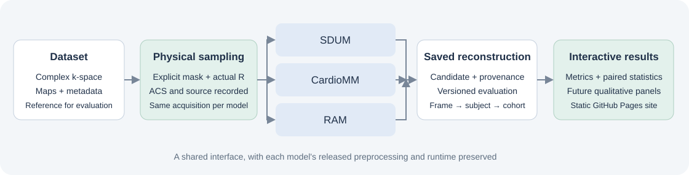

Subject distribution
One dot per subject. Box shows median and interquartile range; whiskers span the observed range.
Hover or focus a dot for its value. Click a subject to highlight it in both comparison plots.
Explore how pretrained models respond to changes in sampling and acceleration. Compare cohort distributions and follow differences within the same subjects.
Swipe the plots horizontally to inspect all values and model labels.
One dot per subject. Box shows median and interquartile range; whiskers span the observed range.
Hover or focus a dot for its value. Click a subject to highlight it in both comparison plots.
The selected sampling pattern, with equal weight for each subject.
Compare all three physical sampling families at the selected nominal acceleration. Actual acceleration varies with the realized mask and is shown below each pattern.
Quality values are mean ± subject-level SD. Click a quality column to sort. Runtime is descriptive.
| Model | Subjects | Median runtime (s) |
|---|
Timing scope and hardware are not harmonized in this snapshot; these runtimes do not establish a speed ranking.
Every point uses the same subject, mask, sampling condition and evaluation protocol.
No subject highlighted.
The research program covers acquisition, signal representation and domain shifts. Only acceleration and k-t sampling metrics are released here. Other test results remain empty placeholders.
This area is reserved for reference images, reconstructed cine and error maps. No existing result images or animations are included in this release.
Matched reference and model panels can be added once their physical mask and display conventions are verified.

65 subjects, SDUM Base, RAM DeepInv and CardioMM. Three CardioMM-source k-t sampling families, nominal R8/16/24, calibration width 20 and seed 1. Actual R is measured from the realized mask, including ACS.
Pseudo-radial masks are rasterized Cartesian support. They are not NUFFT-based non-Cartesian measurements. In-house k-space is constructed from prepared complex reference images and sensitivity maps.
Each complete subject source is divided by its own magnitude p99.5. Scientific arrays are not clipped. Per-frame NRMSE, PSNR and SSIM use the normalized reference and candidate; PSNR/SSIM use data range 1.
Frames receive equal weight within a subject. Subjects receive equal weight within the cohort. SD in the plots describes subject variation; it is not a confidence interval.
RAM receives sensitivity maps and a multi-coil operator. SDUM uses temporal windows and internal map estimation. CardioMM uses framewise reconstruction, internal maps and acquisition metadata.
Physical sampling and conditioning labels are recorded separately. Global output gain and raw-amplitude error remain separate from the primary structural-quality protocol.
The main CSV preserves source numeric values and replaces subject IDs. Its audit records 27 complete groups and matching physical masks across models. Historical task manifests cover 66 subjects; final eligibility leaves 65.
This is an early snapshot. Only acceleration and k-t sampling results are released. Qualitative and other experiment results remain empty. Author details and first-party licensing are pending.